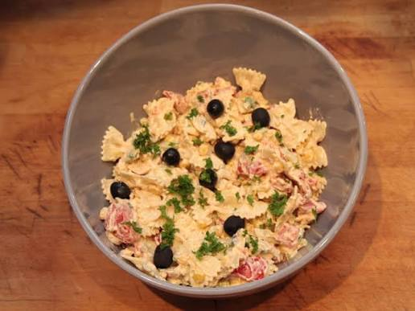

Home
Creamy Crab and Pasta Salad

Description
A crab pasty salad recipe that consists of a cream, seasoned sauce and best served chilled
The simple prep and quick chilling time makes it a fast, easy recipe to make at home!
Ingredients
- 1 package uncooked pasta shells
- 1/2 cup light sour cream
- 1/2 cup light mayonnaise
- 1 tablespoon lemon juice
- 1 tablespoon honey mustard
- 1 tablespoon chopped fresh dill
- 1/2 teaspoon salt
- 1/4 teaspoon ground black pepper
- 1 pound cooked crabmeat
- 1/2 cup dicded red bell pepper
- 1/2 cup dicded green bell pepper
- 1/2 cup chopped green onions
Steps
- Gather all ingredients.
- Bring a large pot of lightly salted water to a boil. Add shells and cook, stirring occasionally, until tender yet firm to the bite, about 9 minutes. Drain.
- Mix sour cream, mayonnaise, lemon juice, honey mustard, dill, salt, and pepper together in a bowl until creamy.
- Transfer cooked pasta to a large bowl. Add sour cream mixture, crabmeat, bell peppers, and green onions.
- Toss until well combined, then cover and chill for 1 to 2 hours before serving.